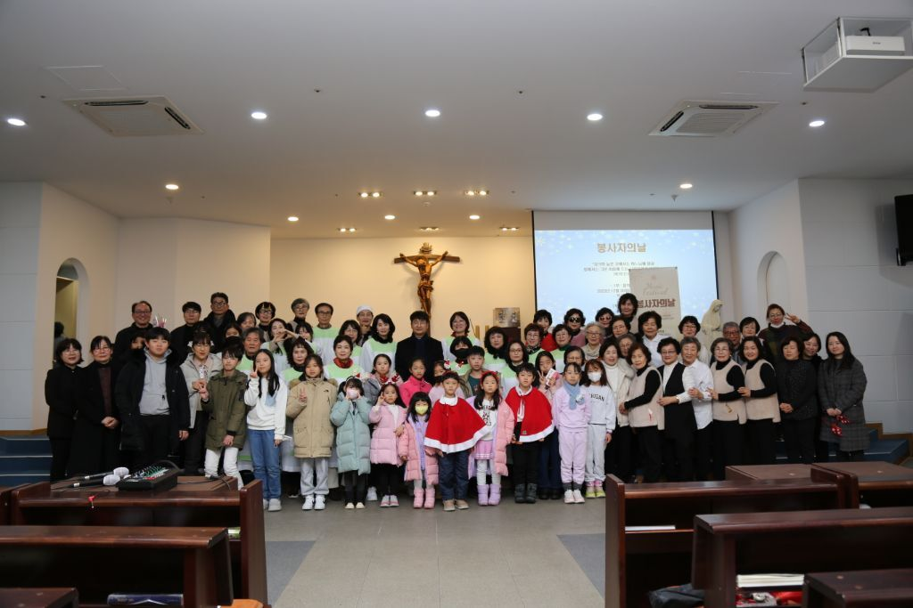

봉사자의 날 2025
2024 덕분에 행복했습니다

음악회 공연 순서
-
주님은 나의 목자, Then Sings My Soul:
박병기 그레고리오(지휘자),
오선옥 아녜스(반주자),
소프라노(안순복 아가다,
김정남 베로니카,
오은주 엘리사벳,
노영옥 미카엘라,
정다운 파우스티나,
김선옥 율리아나,
이은영 루시아),
알토(신정복 벨라뎃다,
김숙자 아녜스,
박정례 아녜스,
모승희 로사),
테너(이은모 미카엘,
황영석 크리스토폴)
-
봉사자를 위한 기도:
레지오(조영철 안드레아 시인),
반주(오선옥 아녜스)
-
Lagrima - F.Tarrega, Asturias (Leyenda) - Isaac Albéniz:
클래식기타 솔로(김한신 가브리엘)
-
사랑합니다 나의 예수님 & 천국은 마치:
주일학교 교사회(하종옥 소화데레사,
이옥형 클라라,
전승화 비비안나,
방미라 카타리나,
신난이 마르첼라,
박성진 레오)
-
찬양: 과수원길, 기도, 율동: 소양강처녀:
김순자 스텔라(지휘자)
변미영 베로니카(반주자)
시니어아카데미(강성덕 모니카,
남명희 사비나,
서주자 루시아,
신애균 안나,
안영분 마르타,
어해선 요세피나,
이병례 젬마,
이창우 안드레아,
최수자 제노베파,
함옥희 안젤라,
김정자 아가다,
김재순 세실리아,
박천경 아가다,
강신숙 세실리아,
노정자 데레사,
김정옥 루시아)
-
주만 바라볼지라, 당신을 향한 노래:
성령기도회(모승희 로사,
이은영 루시아,
하종옥 소화데레사),
기타반(오영래 마티아,
조영희 아셀라 ,
김수현 글라라,
노병권 프란치스코)
